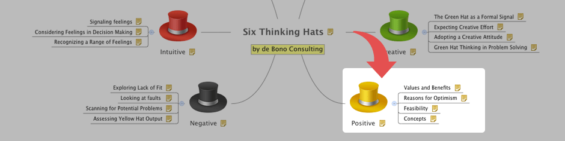
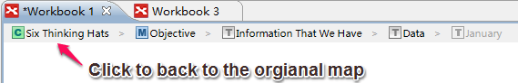

Drill down & Drill up
Only the selected topics and its subtopics will be displayed on a new mind map when it's drill down. BTY, drilldown enables you to focus on a specific branch of the mind map. And drill up can take you back to the original map.
To Drill down:- Select a topic.
- Use one of these methods to drill down:
- Click the F6 key on your keyboard.
- Choose 'View > Drilldown' on the menu.
- Right-click to open the context menu, select 'Drill Down'
- The selected topic will be presented as the central topic in the drilled down map.
Drilled down map

- Click Drill up icon on the central topic of drilled down map.
- Choose 'View > Drillup' on the menu.
- Use shortcut keys: Shift+F6.
Breadcrumb
The breadcrumb is a bar below the toolbar that shows the current map's position when you drilldown into the topic. You can return to the full map easily by clicking on the breadcrumb of the central topic.

Note: If you have added floating topic(s) after drilling down, these topic(s) will not be shown after you drill up. There will be a Drilldown icon on that branch root topic, which reminds you that more details are not shown in that view. You can click it to drill down again and see them.